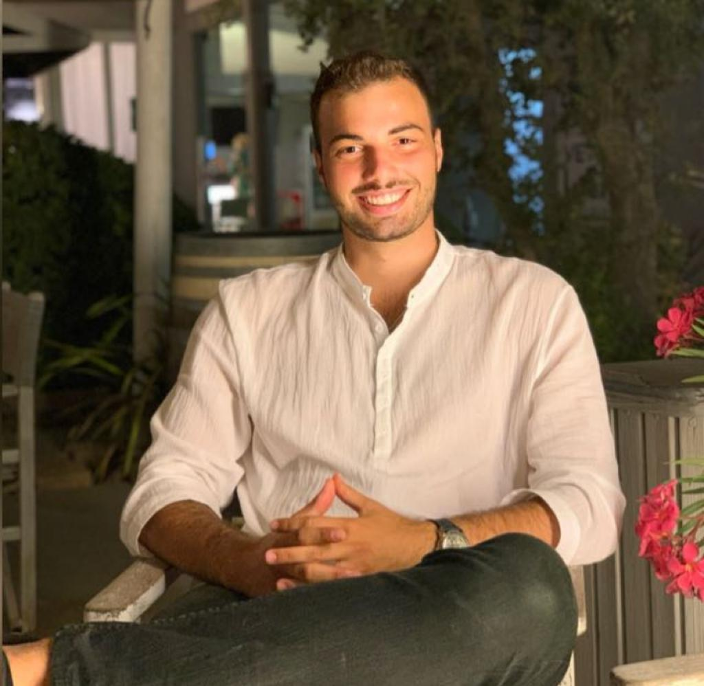

About
Ciao sono Massimo Fusconi. Sono entrato a far parte del mondo assicurativo nel 2018 e fin da subito ho nutrito una fortissima attrazione per questo settore. Ma perchè è necessario assicurarsi e tutelarsi? Io sono pronto ad offrirti una risposta, basata su fatti ben specifici grazie ad una consulenza a 360° a te dedicata.